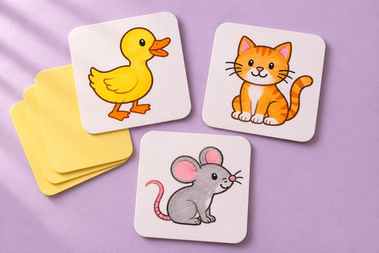

Voltar ao Conecta
Ver contato
Lia Martins
Propostas de alfabetização e aprendizagem para os primeiros anos.
Sobre Lia
Lia trabalha com alfabetização nos anos iniciais do ensino fundamental. Planeja atividades de leitura, escrita e consciência fonológica com jogos e histórias. Também orienta famílias e educadores na adaptação dessas propostas para diferentes ritmos de aprendizagem.
Especialidades
- Alfabetização e letramento
- Consciência fonológica
- Adaptação de atividades
Formação e experiência
Formação
- Licenciatura em Pedagogia
- Especialização em Alfabetização e Letramento
Experiência profissional
- Docência em turmas do 1º ao 3º ano do ensino fundamental
- Criação de materiais e condução de oficinas de alfabetização
Atendimento e contato
- Endereço de atendimento
- Rua Exemplo, 120 · Sala 4
Bairro Modelo · Marília, SP - Atendimento
- Presencial · On-line
- Público atendido
- Crianças dos anos iniciais, famílias e educadores
Contato profissional
- (14) 9XXXX-XXXX
- lia.martins@example.com
Portfólio

Atividade em grupo
Rodas de rimas
Sequência de atividades em grupo para explorar sons finais de palavras com cantigas, leitura em voz alta e jogos de pareamento.
Público Turmas dos anos iniciais do ensino fundamental
Ver material relacionadoComo aplicar a atividade
- Convide a turma a nomear as figuras em voz alta. Comece com pato, gato e rato.
- Peça que as crianças agrupem as cartas que rimam e comparem o som final das palavras.
- Proponha que cada grupo sugira uma nova palavra para uma das rimas.
Lojinha
Gratuito
Pedagogia · Lia Martins
Cartas de rimas
Cartas recortáveis para reconhecer palavras que terminam com sons parecidos.
Ver material